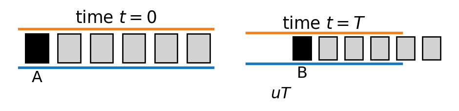
Chapter 8 Traffic Modelling
8.1 Introduction
Smooth and efficient traffic flow is important in our daily lives. Engineers/City Planners are faced with the task of designing, controlling and managing the road system to achieve such a purpose. Mathematical models can provide the understanding necessary for these purposes.
Various modelling methods have been used for the study of traffic flow, including micro-models, macro-models, and complex network models. In micro-models, each car is modelled as a particle and Newton’s laws and other methods are used to study the motion of the particles (cars) and the particle-particle interactions. In macro-models, traffic flow is modelled as an incompressible fluid flow, and the continuum mechanics theory is used for the simulation. Complex network models can be used to simulate both micro- and macro behaviour of traffic flows. In this chapter, a simple model is examined that explains most phenomena observed in traffic flows. The model also provides a useful component for use in traffic control contexts and accident models.
In section 8.2, we will examine a steady flow situation, and then we will examine an unsteady Behaviour in section 8.3.
8.2 Steady Flow
Basic traffic flow models are based on the assumption that the traffic flow is a continuous flow, and the traffic density is a continuous function of space and time. The traffic flow can be described by the following variables:
- Traffic density, \(\rho(x,t)\): the number of vehicles per unit length of the road at position \(x\) and time \(t\).
- Traffic flow, \(q(x,t)\): the number of vehicles passing a point \(x\) per unit time at time \(t\).
- Traffic speed, \(u(x,t)\): the average speed of vehicles at position \(x\) and time \(t\).
For example,
if there are 20 cars on a 1 km stretch of road, the traffic density is \(\rho = 20\) vehicles/km.
If 10 cars pass a point in 1 minute, the traffic flow is \(q = 10\) vehicles/minute.
If the average speed of the cars is 60 km/h, then \(u= 60\) km/h.
In general, the fundamental diagram is a concave function, meaning that as traffic density increases, traffic flow increases up to a certain point (the maximum flow), and then decreases as traffic density continues to increase. This is because at low densities, vehicles can move freely and flow is high, but at high densities, vehicles are forced to slow down and flow decreases.
Suppose the traffic density is \(\rho\), and the car length is \(\ell\). Determine the bumper-to-bumper spacing of the car.
The bumper-to-bumper spacing \(s\) can be calculated as: \[ \rho \ell + (\rho -1)s =1 \Rightarrow s = \frac{1-\rho \ell}{\rho - 1} \]
Flux, Speed and Density Relationship
To understand the above equation, consider a road with a traffic density of \(\rho\) vehicles per unit length and an average speed of \(u\) units of length per unit time. The number of vehicles passing a point on the road per unit time is equal to the product of the number of vehicles per unit length and the distance traveled by each vehicle per unit time, which is equal to the traffic flow \(q\).
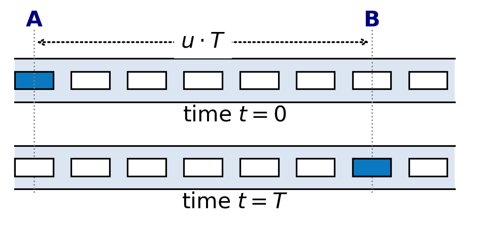
If cars are travelling at speed \(u\), then after a time \(T\) the marked car at \(A\) (see the above Figure) will move a distance \(uT\) to \(B\). During the same time interval \(T\) , all the cars in the section \(AB\) (\(=uT\rho\)) will have all moved on and passed \(B\). Thus, by definition, the flux past \(B\) is the number of cars passing \(B\) per unit time, i.e.
\[\begin{align}
q &= \frac{\text{number of cars passing $B$ during $T$}}{T}\\
&= \frac{\rho u T}{T} = \rho u.\tag{8.1}
\end{align}\]
This equation states that the traffic flow is equal to the product of the traffic density and the traffic speed \(u\).
On average, drivers’ driving speed usually depends on the maximum allowable speed \(u_{\max}\) on the road and the traffic density.
Remarks:
- Drivers drive slower when the traffic density increases. Thus, the traffic speed \(u\) should be a strictly monotonically decreasing function of traffic density.
- On a clear highway, drivers will, on average, travel at the maximum allowable speed \(u_{\max}\). Thus,
\[ u \rightarrow u_{\max}\quad \text{as} \quad \rho \rightarrow 0. \] - When cars are bumper to bumper, drivers are reluctant to move at all. Thus, \(u \rightarrow 0 \quad \text{as} \quad \rho \rightarrow \rho_{\max}.\)
The traffic speed \(u\) can be expressed as a function of traffic density \(\rho\):
\[\begin{equation} u = u(\rho)=u_{\max}\left[1 - \frac{\rho}{\rho_{\max}} \right].\tag{8.2} \end{equation}\]
where \(u(\rho)\) is called the speed-density relationship. The speed-density relationship describes how the average speed of vehicles changes with traffic density.
In general, the speed-density relationship is a decreasing function, meaning that as traffic density increases, traffic speed decreases. This is because at low densities, vehicles can move freely and at high speeds, but at high densities, vehicles are forced to slow down due to congestion.
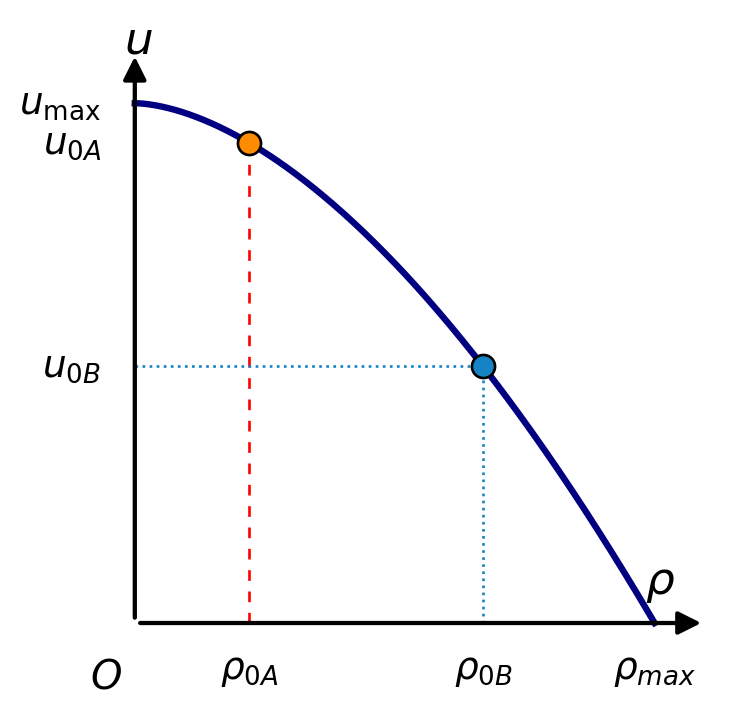
The flux-density relationship
\[\begin{equation} q = q(\rho) = \rho u(\rho) = \rho u_{\max}\left[1 - \frac{\rho}{\rho_{\max}} \right].\tag{8.3} \end{equation}\]
It is possible to determine experimentally the flux–density relationship using data from observation and measurement.
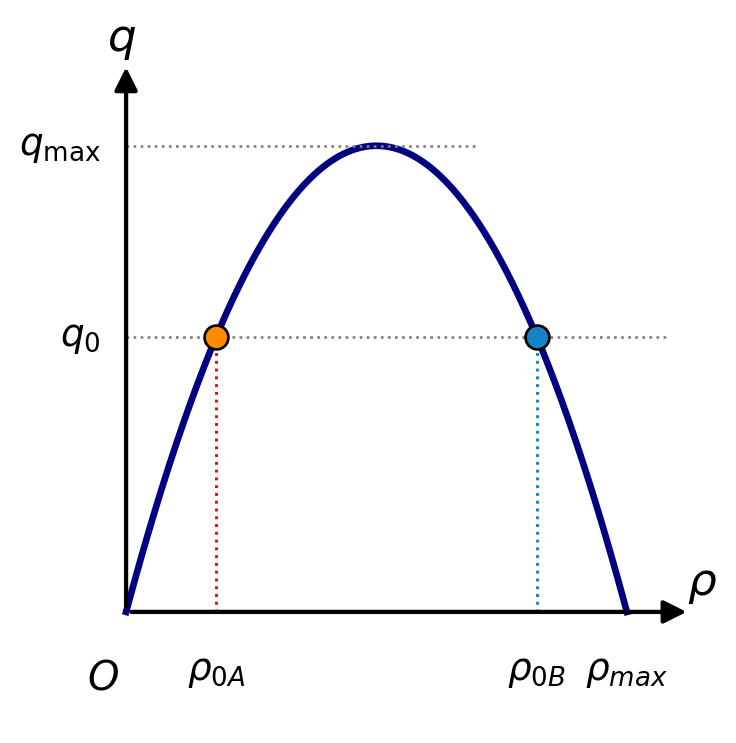
The flux-density model (8.3) displays the following features \[ q \rightarrow 0 \quad \text{as} \quad \left\{ \begin{array}{l} \rho \rightarrow \rho_{\max} \\ \rho \rightarrow 0. \end{array} \right. \]
Under heavy traffic conditions \((\rho \rightarrow \rho_{\max})\), although there are many cars on the road, those cars are travelling slowly, so flux is small.
Under light density conditions, although the cars on the road travel at high speed, there are very few of them.
There will be a \(q_{\max}\) corresponding to certain traffic density \(\rho^*\). The value of \(q_{\max}\) depends on the width of the road, the lighting and the weather conditions, etc.
There will be two possible traffic densities with corresponding speeds for any flux level \(q <q_{\max}\), i.e., a high speed/low density solution and a low speed/high density solution.
8.3 Unsteady traffic flows
In this section, we consider unsteady flow in which the density varies with location along the road. The following assumptions are made, i.e.,
the flux-density relation, \(q = q(\rho)\), holds;
a continuum description is viable.
8.3.1. Conservation principles for cars
Consider a stretch of road between \(x=a\) and \(x=b\) at time \(t\). The number of cars in this segment is \[ N(t) = \int_a^b \rho(x,t) \, dx. \] The rate of change of the number of cars in this segment is given by \[ \frac{dN(t)}{dt} = \frac{d}{dt} \int_a^b \rho(x,t) \, dx = \int_a^b \frac{\partial \rho}{\partial t} \, dx. \] According to the conservation of cars, this rate of change must equal the net flux of cars into the segment: \[ \frac{dN(t)}{dt} = q(a,t) - q(b,t), \] \[ q(x,t) = \rho(x,t) u(x,t) \] is the traffic flux at position \(x\) and time \(t\). Combining these expressions, we obtain \[ \int_a^b \frac{\partial \rho}{\partial t} \, dx = q(a,t) - q(b,t). \] Since this holds for any interval \([a,b]\), we arrive at the conservation law \[ \frac{\partial \rho}{\partial t} + \frac{\partial q}{\partial x} = 0. \]
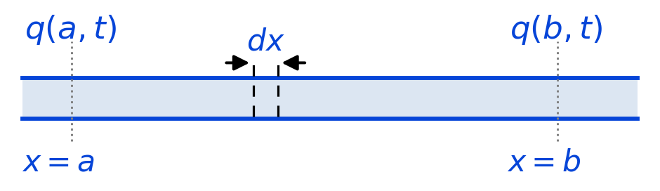
Let \(q(x,t)\) be traffic flux at the point \(x\) at time \(t\), \(\rho(x,t)\) be traffic density at the point \(x\) at time \(t\). Then total number of cars on the road between \(a\) and \(b\) is
\[
\int_a^b \rho(x,t) dx.
\] Rate of increase of cars in \(\bar{ab}\) is \[
\dfrac{d}{dt} \int_a^b \rho(x,t) dx = \int_a^b \rho_t(x,t) dx.
\]
Conservation of cars requires that
the rate of increase of cars (increases of cars per unit time) in \(\overline{ab} \,=\) number of cars entering into \(\overline{ab}\) at \(x=a\) per unit time \(-\) number of cars exiting from \(\overline{ab}\) at \(x=b\) per unit time, i.e.,
\[\begin{align*} \int_a^b \rho_t(x,t) dx &= q(a,t) - q(b,t) = - \int_a^b q_x(x,t) dx \\ \Rightarrow \quad & \int_a^b \left(\rho_t(x,t) + q_x(x,t)\right) dx = 0 \end{align*}\]
As this is to hold for any arbitrary interval \((a,b)\), we require
\[\begin{equation}
\rho_t(x,t) + q_x(x,t) = 0. \tag{8.4}
\end{equation}\] Substituting (8.3) into (8.4) yields \[\begin{equation}
\rho_t(x,t) + q'(\rho)\rho_x(x,t) = 0 \tag{8.5}
\end{equation}\] which is referred to as the traffic equation.
8.3.2. Construction of a solution by the method of characteristics
Consider equation (8.5) in the form
\[ \dfrac{\partial \rho}{\partial t} + q'(\rho) \dfrac{\partial \rho}{\partial x} = 0. \]
Suppose along some curve \(C\), \[\begin{equation} \dfrac{dx}{dt} = q'(\rho). \end{equation}\] Then equation (8.5) becomes \[\begin{equation} \dfrac{\partial \rho}{\partial t} + \dfrac{\partial \rho}{\partial x}\frac{dx}{dt} = \frac{D\rho}{Dt} = 0. \tag{8.6} \end{equation}\] Since the total derivative of \(\rho\) is zero as \(\rho\) is constant on the curve \(C\). This, in turn, means \(q'(\rho)\) is constant on the curve \(C\), and hence \(C\) is a straight line.
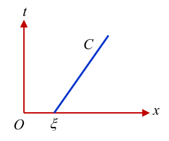
This means that for each constant value of \(\rho\), there corresponds a straight line (in the \(t-x\) plane) along which \(\rho\) has the same value. Using this information, it is conceptually easy to determine \(\rho(x,t)\) given the traffic conditions at the initial time.
Consider equation (8.6) with the initial condition at \(t=0\): \[\begin{equation} \rho(x,0) = f(x), \quad -\infty < x < \infty. \tag{8.7} \end{equation}\] Then at each point \(x=\xi\) along the \(t=0\) axis, we can draw a straight line \(C\) with the required Cauchy characteristic slope \[ q'(\rho(\xi,0)) = q'(f(\xi)) \] along which \(\rho\) retains the value \(\rho(\xi,0)\).
A corresponding analytical description is given by
\[
\rho(x,t) = \rho(\xi,0) \quad \text{along} \qquad x-\xi = q'(\rho(\xi,0))t,
\] where \[\begin{equation}
q'(\rho(\xi,0))=V_{\max}\left[1- \frac{2 \rho(\xi,0)}{\rho_{\max}}\right] = V_{\max}\left[1- \frac{2 f(\xi)}{\rho_{\max}} \right].\tag{8.8}
\end{equation}\]
From \(\dfrac{dx}{dt}=q'(\rho)\), it is clear \(q'(\rho)\) represents a speed and we refer to it as the signal speed . The signal speed is given by the slope of the flux curve \(q(\rho)\) at \(\rho\) and so does not coincide with the car speed. signal speed is given by the slope of the flux curve \(q(\rho)\) at \(\rho\) and so does not coincide with the car speed.
Example 8.1 Starting from traffic lights.
Suppose a traffic light is located at \(x =0\) and cars are stopped in the section \(x<0\) on a red signal. Determine
a) the traffic density \(\rho(x,t)\);
b) the car’s velocity \(u(x,t)\).
a) Solution
The initial condition is given by \[\begin{equation} \rho(x,0) = f(x) = \begin{cases} \rho_{\max}, & x<0,\\ 0, & x>0. \end{cases} \end{equation}\]
At \(t=0\) and \(x<0\), the cars are effectively bumper to bumper so that the density is assumed to be \(\rho_{\max}\) there.
At \(t=0\) and \(x>0\), the road is empty so that the density is assumed to be zero there.
The local wave speed (signal speed) along the characteristics with intercepts in \(x>0\) all correspond to zero density and thus from (8.8) the signal speed is \(q'(0) = V_{\max}\). The local wave speed along the characteristics with intercepts in \(x<0\) all correspond to maximum density and thus from (8.8) the signal speed is \(q'(\rho_{\max}) = -V_{\max}\).
\[ \frac{dx}{dt} = q'(\rho(\xi,0)) = q'(0) = V_{\max}. \]
Similarly, the local wave speed along the characteristics with intercepts in \(x<0\) all correspond to the maximum density so that from (8.8)
\[ \frac{dx}{dt} = q'(\rho_{\max}) = - V_{\max}. \]
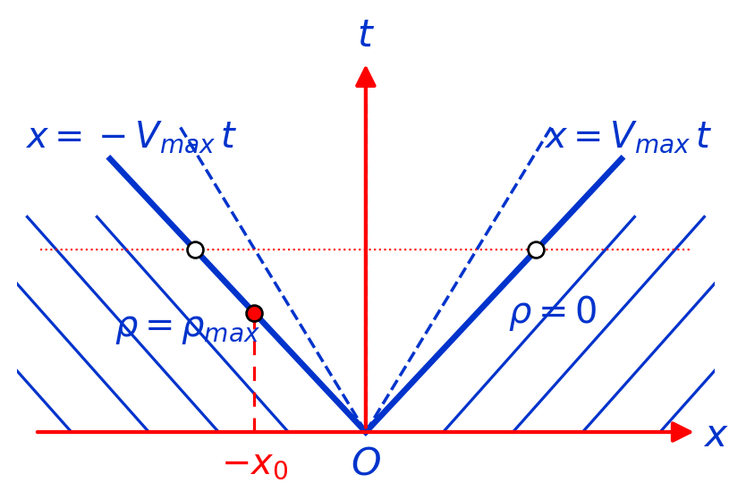
This situation is illustrated in above Figure, where the equations of the characteristics bounding the V-shaped (or fan-like) region radiating from the origin are given. In the fan-like region, each characteristic originating from the origin corresponds to a fixed density that propagates along the line with the equation
\[\begin{equation*} x = q'(\rho)t \quad \text{for} \quad -V_{\max}t < x < V_{\max}t. \tag{*1} \end{equation*}\]
From (8.8),
\[ q'(\rho) = V_{\max}\left(1 - \frac{2 \rho}{\rho_{\max}} \right). \]
So (*1) becomes \[\begin{align*} & x = V_{\max} \left( 1 - \frac{2 \rho}{\rho_{\max}} \right) t \\ \Rightarrow \quad & \rho = \frac{\rho_{\max}}{2}\left(1 - \frac{x}{V_{\max}t} \right). \end{align*}\]
Hence, for all later times (t >0), the density is given by \[\begin{equation*} \rho(x,t) = \left\{ \begin{array}{ll} \rho_{\max} & x \leq -V_{\max}t \\ \dfrac{\rho_{\max}}{2}\left( 1 - \dfrac{x}{V_{\max} t} \right) & -V_{\max}t < x < V_{\max}t \\ 0 & x \ge V_{\max}t. \tag{*2} \end{array}\right. \end{equation*}\]
Remarks:
The above equation (*2) gives \(\rho = \rho_{\max}/2\) when \(x= 0\).
At later times, the initial sudden change in density has become a linear change from \(\rho_{\max}\) to 0.
In the fan-like region, the radiating characteristics will have density ranging from \(\rho_{\max}\) to 0 as we go from left to right. Thus, the 1st car in front of the light will accelerate from zero velocity to the max velocity as there is no traffic in front. While this is happening, the density function will decrease from \(\rho_{\max}\) to 0 in a smooth manner.
The solution is continuous, but the slope of the solution is discontinuous at the boundaries of the fan-like region. This is a typical feature of solutions to hyperbolic equations. The solution is valid for all times (t>0). As time increases, the fan-like region expands and the density in the fan-like region decreases. This is consistent with the fact that the cars are moving away from the traffic light.
b) Solution
Now consider a car initially located at \(x = -x_0\). Determine the car’s velocity \(u(x,t)\).
In above Figure drawing a vertical line from the point \(x = -x_0\) to the characteristic with equation
\[ x = -V_{\max}t. \] we have that when \(x=-x_0,\,t=x_0/V_{\max}\). We can interpret this time interval \(x_0/V_{\max}\) as the time that the car needs to wait before it reacts to the change in the signal.
When \(t> x_0/V_{\max}\), the car will be in the fan-like region and thus
\[
\rho = \frac{\rho_{\max}}{2}\left( 1 - \frac{x}{V_{\max}t}\right)
\] and hence from ($^*$2) the car’s velocity is given by \[
u(x,t) = V_{\max}\left( 1 - \frac{\rho}{\rho_{\max}}\right)=V_{\max}\left[1 - \frac{\rho_{\max}}{2 \rho_{\max}}\left(1 - \frac{x}{V_{\max}t} \right) \right] = \frac{V_{\max}}{2}+\frac{x}{2t} = \frac{dx}{dt}.
\]
\[ \therefore x = A\sqrt{t} + V_{\max}t. \]
As \(\displaystyle x|_{t=x_0/V_{\max}} = A \sqrt{\dfrac{x_0}{V_{\max}}}+V_{\max} \dfrac{x_0}{V_{\max}}= -x_0\),
\[ \Rightarrow \quad A = -2x_0 \sqrt{\dfrac{V_{\max}}{x_0}} = -2 \sqrt{x_0V_{\max}} \]
\[ \therefore \quad x = V_{\max}t-2\sqrt{x_0V_{\max}t}\;. \]
The car’s velocity is then given by
\[\begin{align} u(x,t)=\frac{dx}{dt}&=V_{\max}-2\sqrt{x_0V_{\max}}\frac{1}{2}t^{-1/2}\\ &=V_{\max}-\sqrt{\frac{x_0V_{\max}}{t}} \end{align}\] for \(\displaystyle t\geq \frac{x_0}{V_{\max}}\).
Remarks: The method of characteristics can be used in general to obtain the density as a function of \(x\) and \(t\), provided we know its initial profile and the velocity as a function of \(\rho\).
Example 8.2 Starting from a traffic jam.
Consider the initial density function
\[\begin{equation*} \rho(\xi,0)=\left\{ \begin{array}{ll} \rho_{\max} & \xi \leq 0 \\ \rho_{\max}\dfrac{(\xi-L)^2}{L^2} & 0<\xi<L \\ 0 & \xi \geq L \end{array}\right. \end{equation*}\] where we use \(\xi\) to denote the value of the intercept on the x-axis.
Determine the traffic density \(\rho(x,t)\) for \(t>0\).
Solution: The local wave speed along the characteristics with intercepts in \(x<0\) all correspond to maximum density and thus from (8.8) the signal speed is \(-V_{\max}\). The local wave speed along the characteristics with intercepts in \(0<\xi<L\) all correspond to a density \(\rho(\xi,0)\) and thus from (8.8) the signal speed is \(F'(\rho(\xi,0))\). The local wave speed along the characteristics with intercepts in \(\xi>L\) all correspond to zero density and thus from (8.8) the signal speed is \(V_{\max}\).
The characteristics with intersect in \(x\leq0\) correspond to the maximum density and thus \[\begin{align*}
\frac{dx}{dt} &= F'(\rho_{\max})=V_{\max}\left(1-\frac{2\rho_{\max}}{\rho_{\max}}\right) = -V_{\max} \\ \\
\Rightarrow \qquad x &= -V_{\max}t+\xi_{\ell} \qquad (\text{use}\;\;x|_{t=0}=\xi_{\ell}\leq0).
\end{align*}\] Similarly, those characteristics that intersect the x-axis at \(\xi_r\geq L\) have traffic density \(\rho=0\) and thus have equation of the form
\[\begin{align*}
\frac{dx}{dt} &= F'(0)=V_{\max}\left(1-\frac{0}{\rho_{\max}}\right)=V_{\max} \\ \\
\Rightarrow \qquad x &= V_{\max}t+\xi_r
\end{align*}\] For those characteristics with intersects \(\xi\) on the x-axis, where \(0<\xi<L\), we have
\[
x=F'(\rho_\xi)t+\xi,
\]
where \(\rho_\xi\) is the density along the characteristic with intercept \(\xi\) and \(F(\rho_{\xi})\) is given by
\[
F'(\rho_{\xi})=V_{\max}\left(1-\frac{2\rho_{\xi}}{\rho_{\max}}\right).
\] Hence, \[
x=V_{\max}\left(1-\frac{2\rho_{\xi}}{\rho_{\max}}\right)t+\xi.
\]
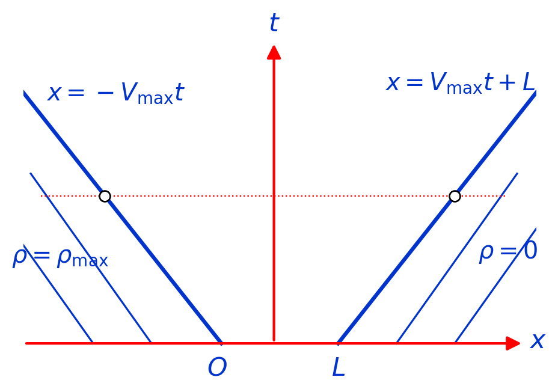
Using the initial density function for \(0<\xi<L\), we have
\[
x=V_{\max}\left(1-\frac{2}{L^2}(\xi-L)^2\right)t+\xi.
\] This equation can be solved to yield \((\xi-L)\) in terms of \(x\) and \(t\) and thus determine \(\rho\) in terms of \(x\) and \(t\).
For this purpose, let \(\eta=\xi-L\) to get
\[\begin{align*}
&\frac{2V_{\max}t}{L^2}\eta^2-\eta+x-L-V_{\max}t=0 \\ \\
\Rightarrow \qquad & \eta=\frac{1\pm\sqrt{1-\dfrac{8V_{\max}t}{L^2}(x-L-V_{\max}t)}}{4V_{\max}t/L^2}
\end{align*}\] Since \(\xi\) must be less than \(L\), and \(x<V_{\max}t+L\), we must choose the negative sign in the solution for \(\eta\). Hence, the density, as a function of \(x\) and \(t\), is given by \[
\rho(x,t)=\frac{\rho_{\max}}{L^2}\left(\frac{1-\sqrt{1-\dfrac{8V_{\max}t}{L^2}(x-L-V_{\max}t)}}{4V_{\max}t/L^2}\right)^2,
\] for \(-V_{\max}t\leq x\leq V_{\max}t+L\).
8.4 Traffic Jam and Shock Propagation
Traffic flow can be modeled as a conservation problem in which cars are treated as a continuous quantity. The main variables are the traffic density
\[ \rho(x,t)=\text{number of cars per unit length}, \]
the average vehicle velocity
\[ u(x,t), \]
and the traffic flow rate
\[ q(x,t)=\rho(x,t)u(x,t). \]
Conservation of vehicles gives the one-dimensional traffic-flow equation
\[ \boxed{ \frac{\partial \rho}{\partial t} + \frac{\partial q}{\partial x} =0. } \]
If the flow rate is related to density through a constitutive relation
\[ q=q(\rho), \]
then the governing equation becomes
\[ \boxed{ \rho_t+\frac{d q}{d\rho}\rho_x=0. } \]
This is a nonlinear first-order conservation law. Such equations can produce discontinuities in density even when the initial traffic distribution is smooth. These discontinuities correspond physically to traffic jams or sharp traffic fronts.
8.4.1 Traffic Jam
A traffic jam develops when vehicles approaching from behind arrive faster than vehicles ahead can leave.
Suppose there are two traffic states:
\[ (\rho_1,u_1,q_1) \]
and
\[ (\rho_2,u_2,q_2), \]
where
\[ q_1=\rho_1u_1, \qquad q_2=\rho_2u_2. \]
Typically, free-moving traffic has relatively low density and high speed,
\[ \rho_1<\rho_2, \qquad u_1>u_2, \]
while congested traffic has higher density and lower speed.
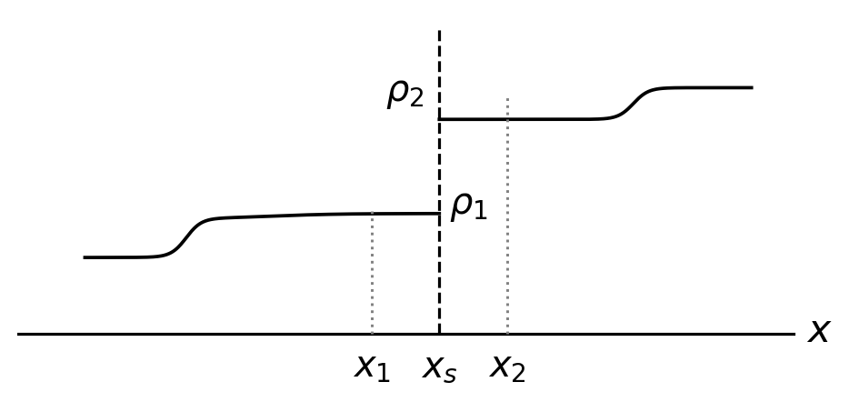
Traffic jam
If faster, lighter traffic catches up with slower, denser traffic, cars accumulate near the interface. The density may therefore change sharply from \(\rho_1\) to \(\rho_2\).
Instead of varying smoothly, the density can have the form
\[ \rho(x,t)= \begin{cases} \rho_1, & x<x_s(t),\\ \rho_2, & x>x_s(t), \end{cases} \]
where
\[ x=x_s(t) \]
is the location of the traffic front.
This moving discontinuity is called a shock.
An important point is that the shock velocity is not generally equal to the velocity of the vehicles. Cars may move forward while the traffic jam itself moves backward along the road.
8.4.2 Shock Propagation
Assume that the traffic density and velocity are discontinuous at an unknown position
\[ x=x_s(t). \]
The states immediately to the left and right of the shock are denoted by
\[ \rho^-=\rho(x_s^-,t), \qquad q^-=q(x_s^-,t), \]
and
\[ \rho^+=\rho(x_s^+,t), \qquad q^+=q(x_s^+,t). \]
Consider a small interval
\[ x_1(t)<x_s(t)<x_2(t). \]
The total number of vehicles in this interval is
\[ N(t)=\int_{x_1(t)}^{x_2(t)}\rho(x,t)\,dx. \]
The rate of change of the number of cars is therefore
\[ \frac{d}{dt} \int_{x_1(t)}^{x_2(t)} \rho(x,t)\,dx. \]
Because the endpoints may themselves move, the number of cars entering or leaving must be calculated relative to those moving endpoints.
At \(x=x_1\), the velocity of the cars relative to the endpoint is
\[ u(x_1,t)-\frac{dx_1}{dt}. \]
Therefore, the vehicle rate entering through the left boundary is
\[ \rho(x_1,t) \left( u(x_1,t)-\frac{dx_1}{dt} \right). \]
Since \(q=\rho u,\) this becomes
\[ q(x_1,t) - \rho(x_1,t)\frac{dx_1}{dt}. \]
Similarly, the vehicle rate leaving through the right boundary is
\[ q(x_2,t) - \rho(x_2,t)\frac{dx_2}{dt}. \]
Conservation of vehicles therefore gives
\[ \frac{d}{dt} \int_{x_1(t)}^{x_2(t)} \rho(x,t)\,dx = q(x_1,t) -\rho(x_1,t)\frac{dx_1}{dt} - q(x_2,t) +\rho(x_2,t)\frac{dx_2}{dt}. \]
Now allow both endpoints to approach the shock:
\[ x_1\rightarrow x_s^-, \qquad x_2\rightarrow x_s^+. \]
As the interval shrinks, the integral tends to zero. Both endpoints move with the shock velocity,
\[ \frac{dx_1}{dt} = \frac{dx_s}{dt} = \frac{dx_2}{dt}. \]
Let \(s=\dfrac{dx_s}{dt}\) denote the shock velocity. The conservation equation becomes
\[ 0 = q^--\rho^-s-q^++\rho^+s. \]
Rearranging,
\[ q^--q^+ = s(\rho^--\rho^+). \]
Hence,
\[ s = \frac{dx_s}{dt} = \frac{q^--q^+}{\rho^--\rho^+}. \]
Equivalently,
\[ \frac{dx_s}{dt} = \frac{q^+-q^-}{\rho^+-\rho^-}. \]
This is the Rankine-Hugoniot shock condition.
Physical interpretation
The shock speed depends on the difference in vehicle flow across the discontinuity divided by the difference in traffic density:
\[ \text{shock speed} = \frac{\text{change in flow rate}} {\text{change in density}}. \]
Thus,
\[ s=\frac{q_2-q_1}{\rho_2-\rho_1}. \]
Three possibilities can occur.
If \(s>0\), the shock moves in the positive \(x\)-direction.
If \(s<0\), the shock travels backward, opposite to the direction in which the vehicles are moving. the shock travels backward, opposite to the direction in which the vehicles are moving.
If \(s=0\), the traffic front remains stationary. the traffic front remains stationary.
A backward-moving shock is especially common in traffic jams. The cars themselves may continue moving forward, but the location at which they begin slowing down moves upstream.
Example
Suppose traffic ahead has density \(\rho_2=100\ \text{cars/km}\) and velocity \(u_2=20\ \text{km/h}.\). Then
\[ q_2=\rho_2u_2 = 100(20) = 2000\ \text{cars/h}. \]
Behind the traffic jam, suppose
\(\rho_1=40\ \text{cars/km},\) and \(u_1=80\ \text{km/h}.\) Then
\[ q_1 = 40(80) = 3200\ \text{cars/h}. \]
The shock velocity is
\[ s = \frac{q_2-q_1}{\rho_2-\rho_1}. \]
Therefore,
\[ s = \frac{2000-3200}{100-40} = \frac{-1200}{60} = -20\ \text{km/h}. \]
The negative sign means that although the vehicles themselves are moving forward, the traffic-jam front moves backward at \(20\) km/h.
Connection with the traffic-flow equation
If \(q=q(\rho)\), then the governing equation is
\[ \rho_t+q'(\rho)\rho_x=0. \]
For a smooth solution, disturbances travel along characteristics with speed
\[ c(\rho)=\frac{dq}{d\rho}. \]
This characteristic speed is different from the vehicle velocity
\[ u=\frac{q}{\rho}. \]
When characteristics intersect, a smooth solution can no longer exist. The density becomes discontinuous, and a shock forms. The shock then propagates according to
\[ \frac{dx_s}{dt} = \frac{q(\rho_2)-q(\rho_1)} {\rho_2-\rho_1}. \]
Therefore, the characteristic speed
\[ \frac{dq}{d\rho} \]
describes the propagation of small smooth traffic disturbances, while the Rankine-Hugoniot speed
\[ \frac{q_2-q_1}{\rho_2-\rho_1} \]
describes the propagation of a finite discontinuity or traffic shock.
In summary, a traffic jam can be interpreted mathematically as a sharp change in traffic density, and shock propagation determines how that sharp interface moves while preserving conservation of the total number of vehicles.
8.4.3 The situation at a traffic light
Suppose we have a uniform stream of cars moving with traffic density \(\rho_0\), which is suddenly stopped at a red light at \(x=0\) and \(t=0\). At \(x=0\), \(u=0\), and we can associate the density at this point with the maximum (bumper-to-bumper) density, \(\rho_m\). The initial density plot as a function of \(x\) is shown in Figure below.
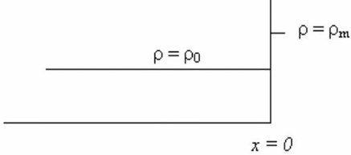
Initial density plot as a function of \(x\) for a uniform stream of cars moving with traffic density \(\rho_0\), which is suddenly stopped at a red light at \(x=0\) and \(t=0\).
Its corresponding characteristics are shown in Figure below.
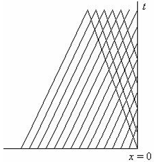
This characteristics for the oncoming cars are shown sloping to the right, while those characteristics corresponding to \(\rho_m\) are shown sloping to the left and originating from \(x>0\). Where the characteristics intersect, the density at each point is multi-valued, which corresponds to what we termed breaking waves earlier. A shock can be fitted to make the density single-valued.
For relatively light traffic (that is, \(\rho_0\) not close to \(\rho_m\)),
the characteristics for the oncoming cars are shown sloping to the right, while those characteristics corresponding to \(\rho_m\) are shown sloping to the left and originating from \(x>0\).
Where the characteristics intersect, the density at each point is multi-valued, which corresponds to what we termed breaking waves earlier. A shock can be fitted to make the density single-valued. This shock has a speed given by
\[ \frac{dx_s}{dt}=\frac{\rho_m u(\rho_m)-\rho_0u(\rho_0)}{\rho_m-\rho_0}=-\frac{\rho_0 u(\rho_0)}{\rho_m-\rho_0}. \] Thus, the shock propagates to the left. At a later time \(t>0\), this shock front would be located at
\[ x_s=-\frac{\rho_0 u(\rho_0)}{\rho_m-\rho_0}t. \]
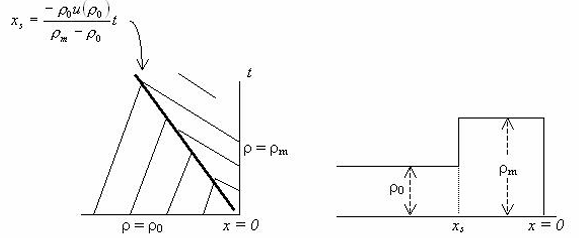
The shock trajectory together with the characteristics is shown on the left in the above Figure at some time \(t>0\). On the right, the density profile at this time is also shown. Now, in the region \(x>0\), just past the traffic light, the last car that passed the light before it turned red is travelling at the velocity \(u(\rho_0)\). The red signal therefore separates a region of zero density from one of density \(\rho_0\) and the density at \(t=0\) may be illustrated by that in Figure below.
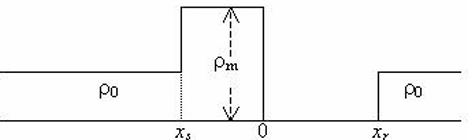
This again has a region of low density behind one of higher density, which means there will be another shock in \(x>0\), with the shock velocity given by
\[ \frac{dx_r}{dt}=\frac{\rho_0u(\rho_0)}{\rho_0-0}=u(\rho_0), \] and after time \(t\), this shock will be at
\[ x_r=u(\rho_0)t. \]
Hence, for \(t=0\) and before the light turns green, the density profile is as given in Figure below. The shock at \(x_s\) is moving to the left, while the shock at \(x_r\) is moving to the right. The density profile between these two shocks is uniform and equal to \(\rho_0\).
Suppose the traffic light turns green at \(t=\tau\). After this time, the shock ahead of the lights continues to move forward at the speed \(u(\rho_0)\), while the shock behind the light continues to move to the left, as traffic with density \(\rho_0\) continue to arrive. To simplify matters, let us assume the velocity-density function \[u=u_m(1-\rho/\rho_m),\] and \[q=u_m(\rho-\rho^2/\rho_m),\] which we have used before. At time \(t=\tau\), the rear shock is at
\[ x_{s\tau}=-\frac{\rho_0 u(\rho_0)}{\rho_m-\rho_0}t=-\frac{\rho_0 u_m}{\rho_m}t. \]
For the car at the front of the line of stopped cars, we now have the density function, \(-u_m(t-\tau)<x<u_m(t-\tau)\), \[\begin{equation} \rho_{\tau}(x,t)=\frac{\rho_m}{2}\left(1-\frac{x}{u_m(t-\tau)}\right), \tag{8.10} \end{equation}\] where we use \(\rho_\tau\) to remind ourselves that this expression holds from time \(t=\tau\) onwards. Hence, a short time after \(t=\tau\), the density profile looks like that given in Figure below.
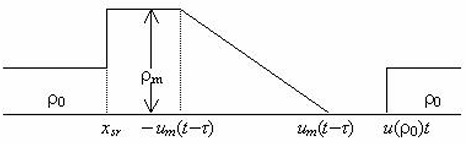
If at time \(t=t_d\), the line of stopped cars completely dissipates, at this time we must have
\[\begin{equation*}
-u_m(t_d-\tau)=x_{s\tau}=-\frac{\rho_0u_mt_d}{\rho_m}
\end{equation*}\] or \[\begin{equation*}
t_d=\frac{\tau}{1-\rho_0/\rho_m}. \tag{8.11}
\end{equation*}\]
At this point in time, the density on the left is given by the solid lines, and the dotted lines represent the situation a little time after \(t=t_d\).
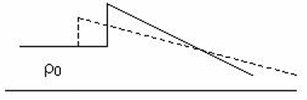
The discontinuity in the density is between \(\rho_0\) and that given by \(\rho_\tau\) in (8.10), which is not constant. The strength of the shock is defined as the difference between the traffic densities across the shock, and is not constant in this case. It actually decreases as time increases. The shock velocity is now given by
\[\begin{align*} \frac{dx_\text{late}}{dt}&=\frac{q(\rho_\tau)-q(\rho_0)}{\rho_\tau-\rho_0} \\ &=\frac{u_m(\rho_\tau-\rho_\tau^2/\rho_m)-u_m(\rho_0-\rho_0^2/\rho_m)}{\rho_\tau-\rho_0} \\ &=\frac{u_m(\rho_\tau-\rho_\tau^2/\rho_m-\rho_0+\rho_0^2/\rho_m)}{\rho_\tau-\rho_0} \\ &=u_m\left(1-\frac{\rho_\tau+\rho_0}{\rho_m}\right). \end{align*}\]
Substituting for \(\rho_\tau\), and integrating, we end up with
\[
x_\text{late}=A\sqrt{t-\tau}+u_m(t-\tau)(1-2\rho_0/\rho_m),
\]
where \(A\) is an integration constant, which can be found by using the condition that when \(t=t_d,\; x_\text{late}=-u_m\rho_0t_d/\rho_m\), which gives
\[ A=-2u_m\left(\frac{\rho_0\tau}{\rho_m-\rho_0}\right)^{1/2}\left(1-\frac{\rho_0}{\rho_m}\right). \]
Hence, the solution for \(x_\text{late}\) is \[\begin{equation} x_\text{late}=-2u_m\left(1-\frac{\rho_0}{\rho_m}\right)\left(\frac{\rho_0\tau}{\rho_m-\rho_0}\right)^{1/2}\sqrt{t-\tau}+u_m(t-\tau)\left(1-\frac{2\rho_0}{\rho_m}\right). \tag{8.11} \end{equation}\] For values of \(\rho_0<\rho_m/2\), that is light traffic, it can be shown that the shock eventually reverses direction and head back to the origin. If it reaches the origin at time \(t-t_\text{clear}\), the value of \(t_\text{clear}\) can be obtained by solving (8.11) with \(x_\text{late}=0\). This gives
\[ t_\text{clear}=\frac{\tau}{(1-2\rho_0/\rho_m)^2}. \]
Looking at the values of the density at \(x=0\), we note that \(\rho(0,t)=\rho_m\) for \(t<\tau\).
Then \(\rho(0,t)=\rho_m/2\) for \(\tau<t<t_\text{clear}\). When the shock reaches the origin again, the density has to drop back to \(\rho_0\), the uniform traffic density.
Thus, \(t_\text{clear}\) can be interpreted as the time for the congestion to clear.
On the other hand, if \(\rho_0>\rho_m/2,\;x_\text{late}\) is always negative, and so the shock never returns to the origin.
Thus, for heavy traffic, the congestion caused by a momentary disturbance never quite dissipates.
Exercises
Question 8.1
Let the velocity field be \(u=u_m(1-\rho/\rho_m)\) where \(u_m\) and \(\rho_m\) are the maximum velocity and density, respectively. If the initial traffic density is given by \[\begin{equation*} \rho(\xi,0)=\left\{\begin{array}{cc} \rho_m, & \xi<0 \\ \rho_m/2, & 0<\xi<a \\ 0, & \xi>a. \end{array}\right. \end{equation*}\] Sketch the characteristics and the density at all late times.
Note: there are two small fan–like regions, one radiating from \(x=0\) and one from \(x=a\).
Question 8.2
A car stops 1 car length behind a traffic light. Find the trajectory of the car as it starts when the light turns green and accelerates to the maximum velocity. What is its acceleration when it is level with the lights? Assume the velocity field \(u=u_m(1-\rho/\rho_m)\) as before.
Question 8.3
Given the initial density \[\begin{equation*} \rho(\xi,0)=\left\{\begin{array}{cc} 3\rho_m/5, & \xi<0 \\ \rho_m/5, & \xi>0. \end{array}\right. \end{equation*}\] If the velocity field is the same as for question 1, sketch the initial density, the characteristics and the density at later times.
Question 8.4
Given the velocity field \(u(\rho)=u_m(1-\rho^2/\rho^2_m)\), where \(u_m\) and \(\rho_m\) have the same meaning as before and \[\begin{equation*} \rho(\xi,0)=\left\{\begin{array}{cc} \rho_m, & \xi<0 \\ \rho_m(L-\xi)/L, & 0<\xi<L \\ 0, & \xi>L. \end{array}\right. \end{equation*}\] Determine the characteristics and \(\rho(x,t)\) for \(t>0\).
Additional Questions
Question 8.5
A car is stopped at a traffic light. When the light turns green, the car accelerates to the maximum velocity. Find the trajectory of the car and its acceleration when it is level with the traffic light. Assume the velocity field \(u=u_m(1-\rho^2/\rho^2_m)\) as before.
Question 8.6
Derive \(q(\rho)=\rho u(\rho)\) and show that with \(u(\rho)=u_m\left(1-\dfrac{\rho^2}{\rho_m}\right),\) we have \(q(\rho)=u_m\left(1-\dfrac{\rho^2}{\rho_m}\right),\) which is quadratic; sketch \(q(\rho)\).
From condervation law, \(\dfrac{\partial \rho}{\partial t}+\dfrac{\partial q(\rho)}{\partial x}=0,\) prove density is constant along \(\dfrac{dx}{dt}=q'(\rho)\) and interpret \(q'(\rho)\) physically.
For \(\rho(x,0)=\rho_{\max}\) for \(x<0\) and \(0\) for \(x>0\), find \(\rho(x,t)\) for \(t>0\) (linear model).
Define a traffic shock and derive
\[ s'(t)=\dfrac{dx}{dt}=\frac{q(\rho_2)-q(\rho_1)}{\rho_2-\rho_1}. \]
For \(q(\rho)=V_{\max}\!\big(1-(\rho/\rho_{\max})^2\big)\),
- find \(q(\rho)\);
- compute \(q'(\rho)\);
- compare with the linear model.